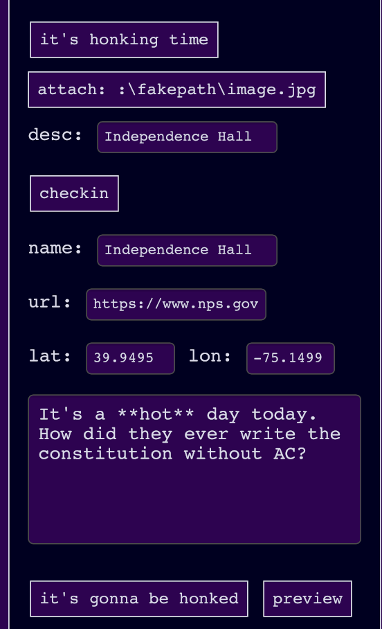
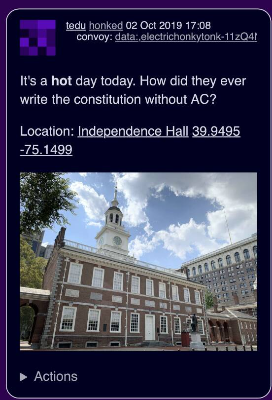

| HONK(5) | File Formats Manual | HONK(5) |
honk — status
composition
Status updates composed in honk have many
features beyond just plain text.
The process begins by pressing the button marked “it's honking time” to activate the honk form.
Honks are posted publicly.
A subset of markdown is supported.
```c
/* triple tick code blocks support syntax highlighting */
int main() { return 0; }
```
<img alt="Lifecycle of a honk" src="https://example.com/diagram.png">
If the first line of a honk begins with “DZ:” (danger zone) it will be used a summary and the post marked sensitive.
Mentioning a specfic user such as (@user@example.social) will send
a copy of the message to them. Several forms are supported.
‘@name’ will work using the short name
from the honkers table and be expanded
automatically. ‘@handle@domain’ will
work for anyone.
‘@https://example.com’ works as well.
When honking back, the author of the parent post is automatically
mentioned.
Threads from the tiny bird site may be included as quotes in a post via the hoot operator followed by the URL.
hoot:
https://twitter.com/tedunangst/status/850379741492367360Custom emoji may be included by colon wrapping the image name. (:hellsyeah:) A meme (sticker, reaction gif) may be included with the meme operator followed by the file name.
meme: honk.mp4Custom flag emoji may be generated on the fly by specifying comma separated hexadecimal RGB values, one for each stripe.
flag:306,002,dcfThere are no length restrictions, but remember, somebody is going to have to read this noise.
One may attach a file to a post. Images are automatically rescaled and reduced in size for federation. A description, or caption, is encouraged. Text files and PDFs are also supported as attachments. Other formats are not supported.
One may also check in to a location. The available fields, all optional, are name, url, latitude, and longitude. By default, location data is rounded to approximately 1/100 decimal degree accuracy. Pressing the check in button a second time will refine this to more a precise location.
Adding a time to a post turns it into an event. Supported formats for start time are HH:MM or YYYY-MM-DD HH:MM. A 24 hour clock is assumed, unless am or pm are specified. The duration is optional and may be specified as XdYhZm for X days, Y hours, and Z minutes (1d12h would be a 36 hour event).
When everything is at last ready to go, press the “it's gonna be honked” button.
(Slightly dated screenshots.)
Composing a new honk with an attached image and location.

screenshot of honk
composition
After posting.

screenshot of honk
after posting
Markdown support is implemented with regexes. Preview is recommended.
| December 10, 2020 | OpenBSD 6.7 |